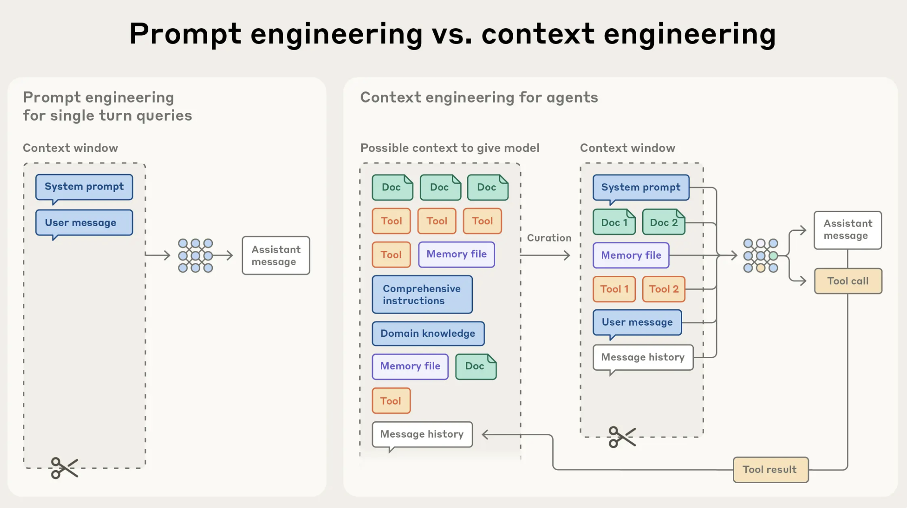
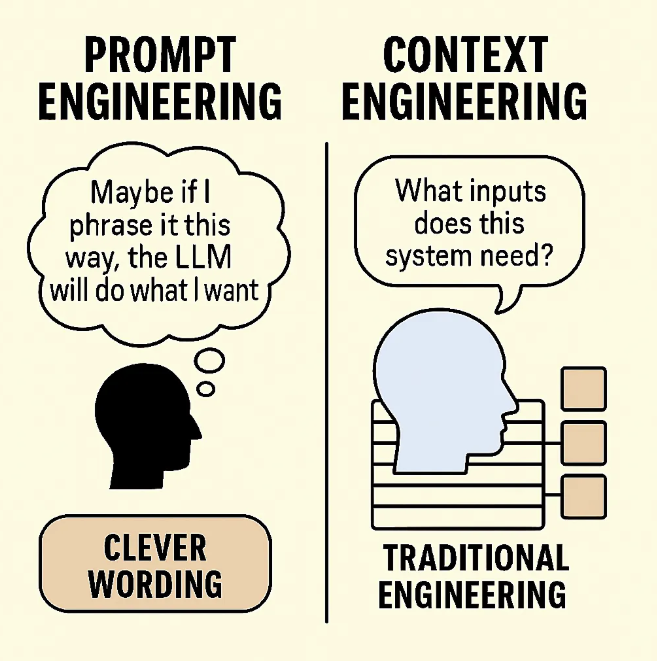

AI를 제대로 활용하기 위한 3단계 기술의 진화

모델이 답을 생성하기 전, 참고하는 모든 배경 정보와 도구의 총체

"Humans steer. Agents execute."— OpenAI 하네스 엔지니어링 핵심 철학
긴 작업을 끝까지 해내는 실행 구조 설계
무엇을 시킬까 → 무엇을 보여줄까 → 어떻게 일하게 할까
"AI의 잠재력을 이끌어내는 핵심은 모델이 아닌, 시스템에 있다."
더 똑똑한 모델을 찾는 것이 아니라, 그 모델이 제대로 일할 수 있는 환경과 구조를 함께 설계하는 것이 중요합니다.